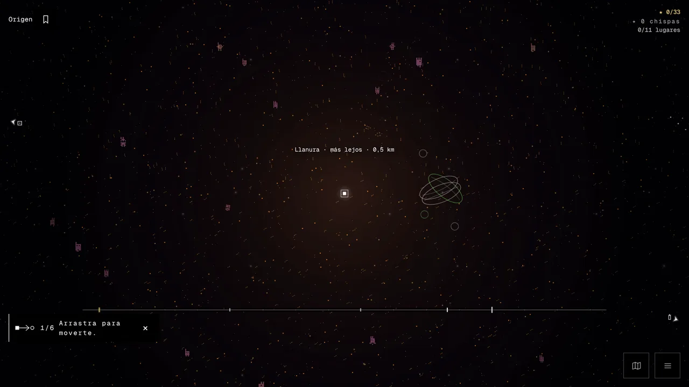
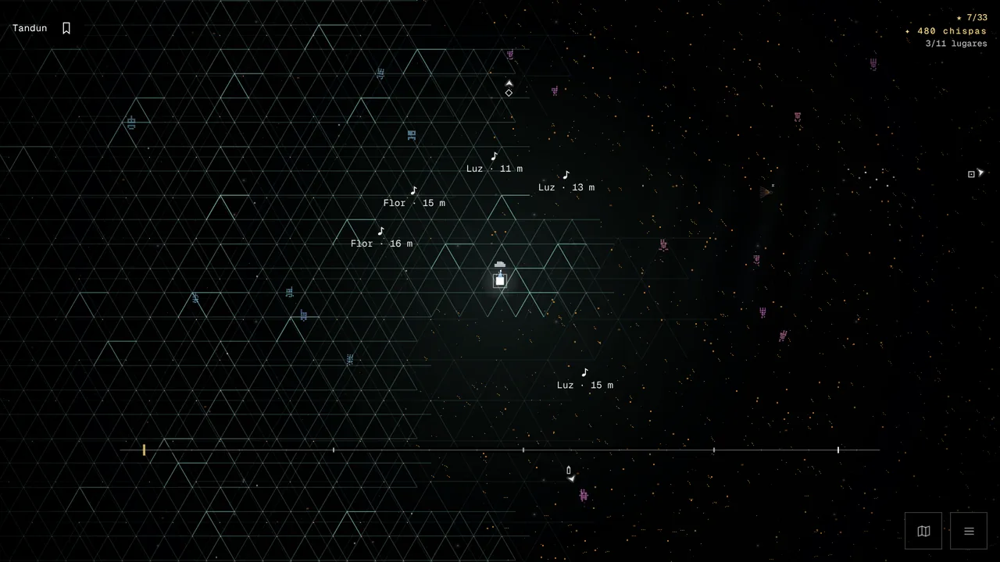
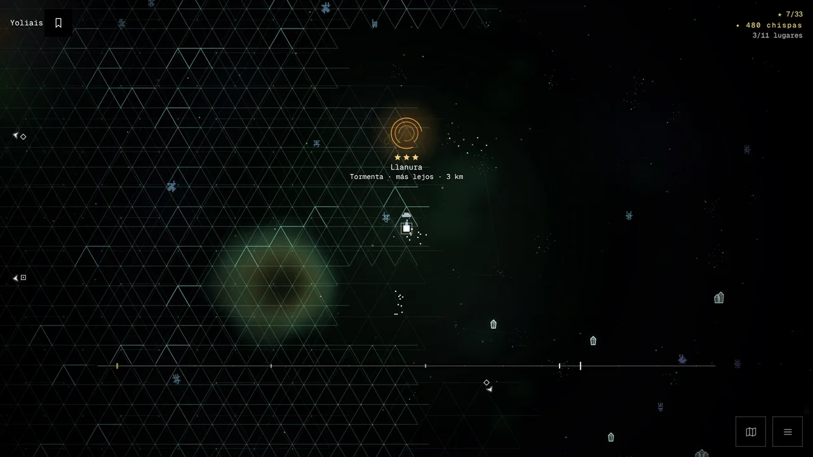
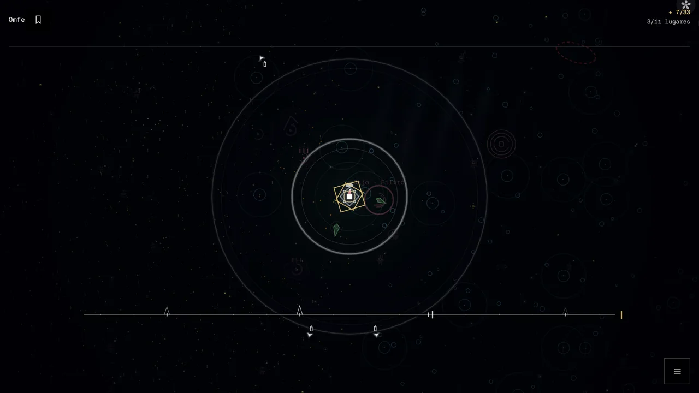
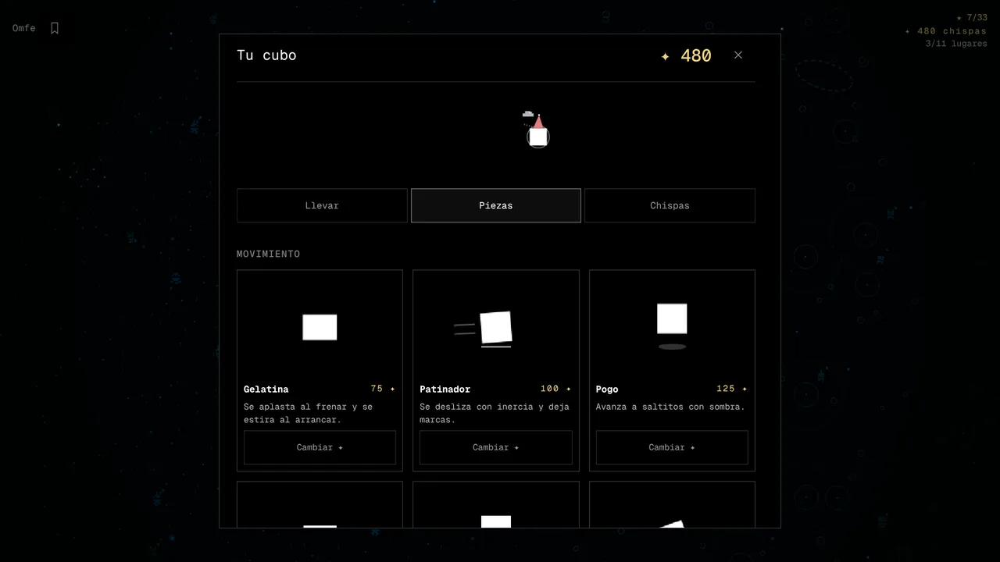
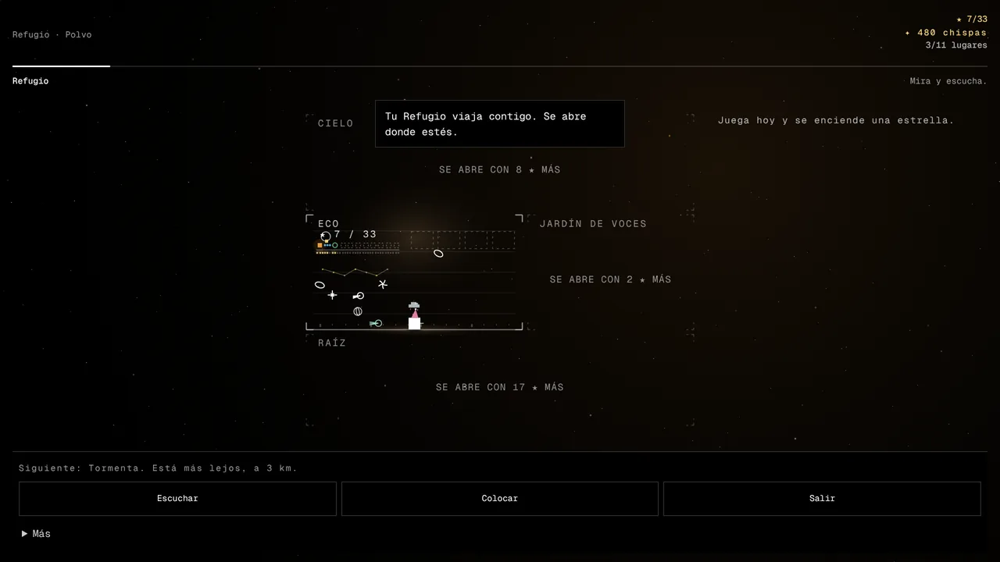

Kubono
Un cubo. Un universo que suena.
Eres un cubo en un universo abierto. La música responde a lo que haces.
Pronto en itch.ioPronto en Google Play

Mundo abierto
Desde el primer segundo. Camina hacia donde quieras.
Escáner
Mantén pulsado. Una onda muestra lo que hay cerca.
Once lugares
El primero está a 0,5 km. El último, a 40 km.
Música que reacciona
Cada región tiene su género. Lo que haces cambia el arreglo.
Capturas

El escáner: criaturas, cajas y secretos cerca. 
Al llegar, el portal del lugar aparece delante. 
Una ronda a tiempo. Hasta tres ★. 
Tu cubo: más de ochenta piezas, por chispas que ganas explorando. 
Tu Refugio viaja contigo.
Pago único. Sin anuncios ni compras dentro del juego. Sin cuenta y sin conexión. En español e inglés. Mejor con auriculares.